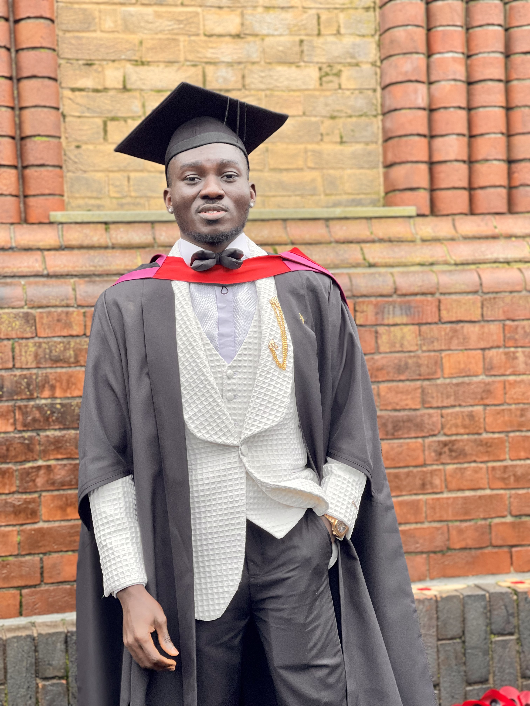

Gideon O Ayeni

About Me
I am a recent graduate in Robotics and Smart Technologies with a strong passion for software development. I am keen about software development and I have relevant Python,C/C++ programming skill. My personal characteristics can be summarized as positive, determined and resilient. I am a good communicator, active listener and good team player. I am highly focused with the abilities to meet challenging deadlines and support operational project goals.
Education
- Msc Robotics and smart technology - Staffordshire University (2022-2023)
- BTech Electronics and Electrical Enginering - Ladoke Akintola Univeristy of Technology (2014-2021)
Work Experience
- Robotic Process Automation Consultant - Unilathe Limited (SAMPID PROJECT)
02/2023 - 06/2023
- Understanding the company existing manual welding process
- Developing a process to automate the manual welding process
- Mimicking the manual process using a 6-DOF robot manipulator.
- Software Developer Trainee
03/2021 - 05/2022
- Maintained a 100% customer satisfaction rating by teaching python programming language to beginners.
- Met with head programmer on weekly basis to provide detailed reports and milestones updates.
Technical Skills
- Python Programming
- HTML5
- C/C++ Programming
Interpersonal Skills
- Effective Communication
- Collaborative Team-player
- Problem Solving
Courses Certification
Other
- My Hobbies
- Contact Me